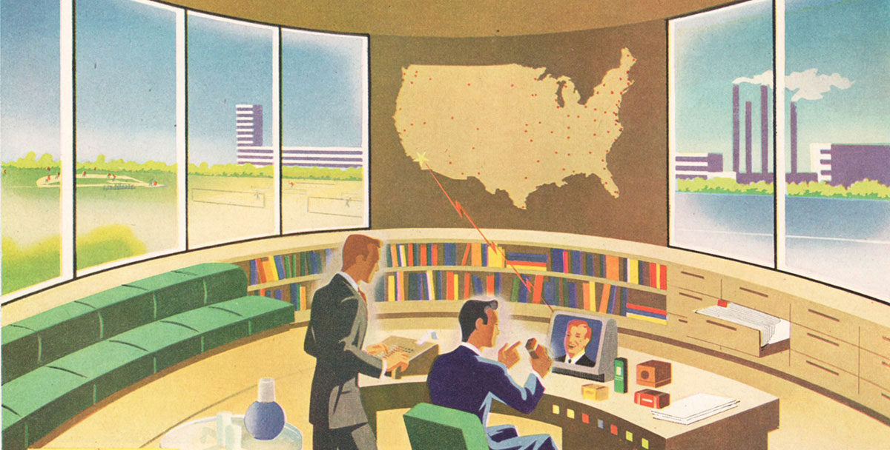

Tomorrow's Technology, Yesterday's Insights
Sometimes what the tech world comes up with has already been tried and rejected and really doesn't need to be resurrected—like the Taylorist view...
Technology